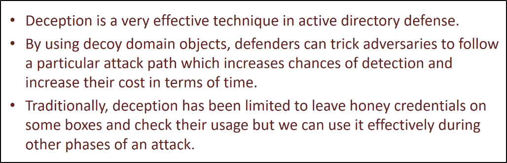
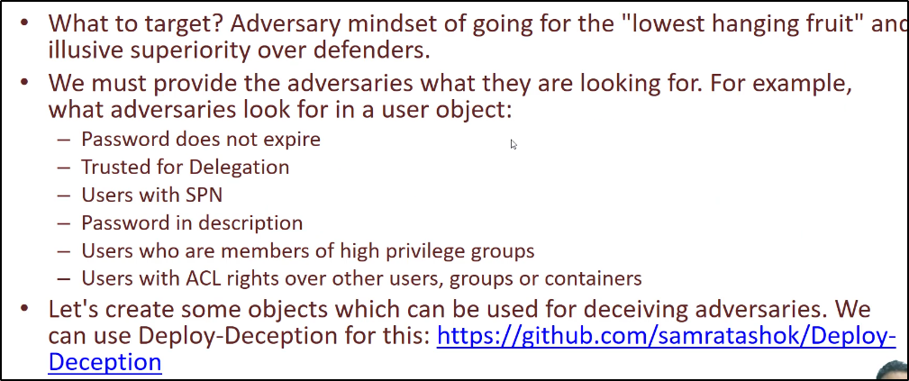
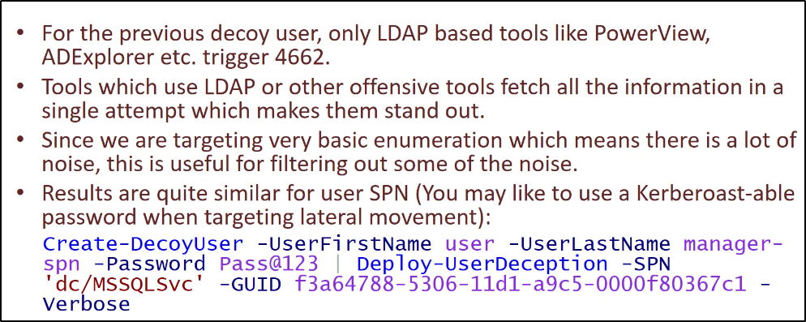
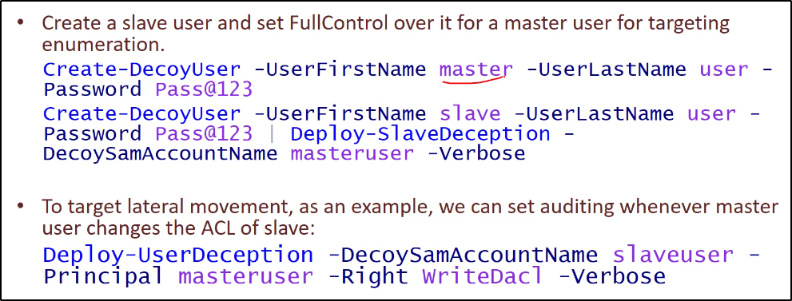

Deception:

Deception in Active Directory Enviroment:

Deception in AD - Enumeration - User Objects:

Deception in AD - Enumeration - Computers:
Deception in AD - Enumeration - Groups:
Deception in AD - Lateral Movement - Users:
